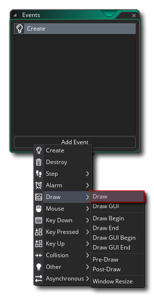
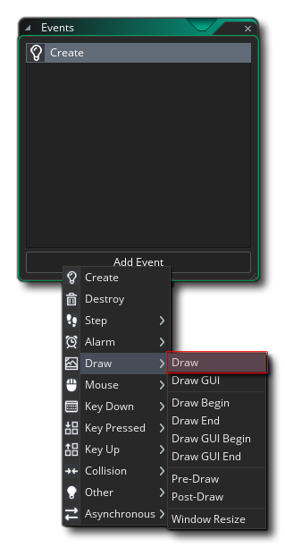

We are now going to add a Draw Event to our object. Click  the Add Event button now and select the Draw Event category:

the Add Event button now and select the Draw Event category:

As you can see, there are multiple draw events to choose from, but for this we simply need the general draw event, which is the one at the top of the category list (highlighted in the image above). The general draw event is the one that GameMaker Studio 2 uses when it default draws your instance sprite. What does this mean? Well, so far we haven't added any Draw Event to any of our instances, and yet they all draw their sprites to the screen when we run the project. This is because when you don't add a general Draw Event to an object yourself, GameMaker Studio 2 will automatically assume you want to draw the sprite assigned to the instance along with any transforms (like colour or alpha or scale) that you have added. Essentially, the general Draw Event defaults to using the Draw Self action .
That action will also draw the assigned sprite along with any applied transforms, just like the default drawing for an instance when it has no Draw Event. Now, when you add a general Draw Event to an object and in it add some action blocks, you are telling GameMaker Studio 2 that you want to handle what is being drawn and GameMaker Studio 2 will no longer draw anything except what you have put in the event, so it won't draw the assigned sprite unless you tell it to (and you can draw any sprite, it doesn't have to be the assigned one).
The general Draw Event (and all other draw events) will be performed once for every game frame, much like the Step Event will, and note that you can have unrelated actions in the draw event as well as draw actions (but it is recommended that you keep this to a minimum and use the Step Events instead where possible). However, all drawing must be done in a draw event, and in general placing draw functions in any other event will not work.
Just before we continue, it's worth noting that the Draw Events other than the general drawing, will not affect the instance default drawing, so that you can, for example, have no general Draw Event but have a Draw End Event and the instance will still default draw the sprite and whatever you have added into the Draw End Event. If you want to know more about the different events in the Draw Event category, you can press  to open the manual and read up on them in the section on the Object Editor.
to open the manual and read up on them in the section on the Object Editor.